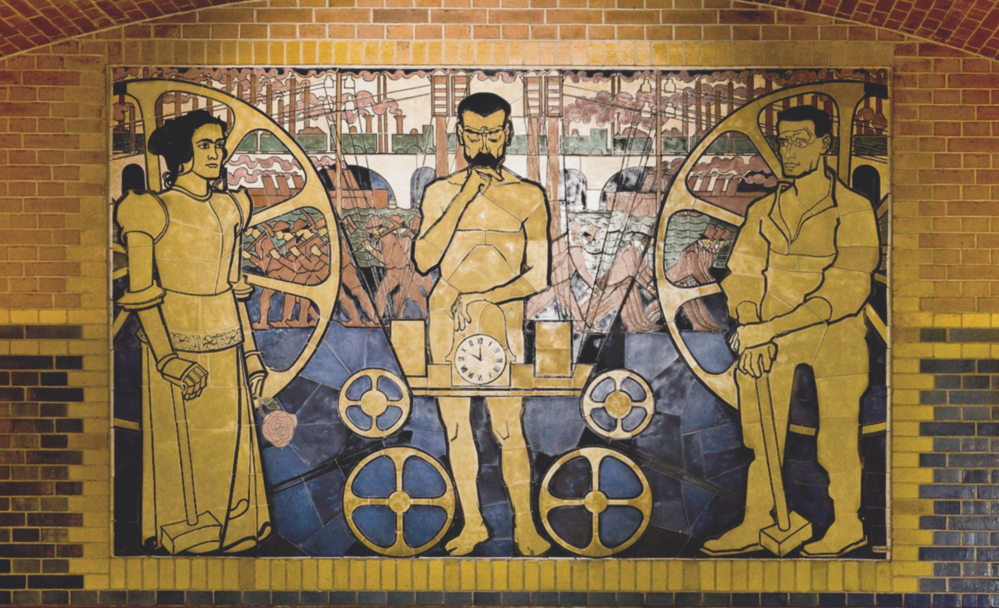

{% include top-header.html %}


    	  <div id = "slow" class="bf animated fadeIn"  style="" z-index: 2;>
    	  
    	  </div>    	  

{% include bottom-header.html %}

<div class="content">
{% capture my_include %}{% include call-for-papers.md %}{% endcapture %}
{{ my_include | markdownify }}
</div>

		</div><!-- Container -->

<!-- script for header -->


<!-- script for scrolling -->
	<script>

	$(function() {
	  $('a[href*=#]:not([href=#])').click(function() {
	    if (location.pathname.replace(/^\//,'') == this.pathname.replace(/^\//,'') && location.hostname == this.hostname) {

	      var target = $(this.hash);
	      target = target.length ? target : $('[name=' + this.hash.slice(1) +']');
	      if (target.length) {
	        $('html,body').animate({
	          scrollTop: target.offset().top
	        }, 1000);
	        return false;
	      }
	    }
	  });
	  
	});
	</script>  